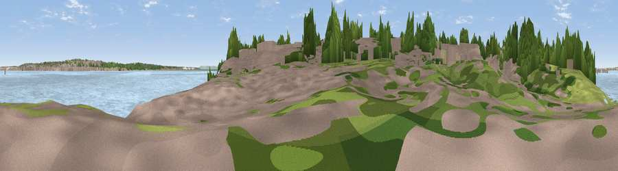

Viewpoint near New Ferry
#42051 in England · top 88% of its area beats it · near New FerryThe view, rendered

A 360° render of this exact spot computed from the terrain model, tree cover and land cover — summer colours, afternoon light, calibrated against photographs of famous viewpoints. Real trees, hedges and buildings will differ in detail.
The panorama
Grey silhouette: terrain skyline in each direction (720 bearings, Earth curvature and refraction included). Dashed green: skyline with trees (+15 m) and buildings (+8 m) as obstacles. Blue strip: how far the ground is visible on each bearing.
Where the view opens
Wedge length = distance to the farthest visible ground on that bearing (vegetation-aware). Rings at 10, 25 and 50 km.
What fills the view
58% water · 18% woodland · 17% built-up · 7% grassland
Angular shares of the visible panorama (visual magnitude), not map area. Landscape diversity 0.49 (0–1 Shannon).
Key numbers
More beautiful places nearby
The staircase of upgrades: each row has a higher view potential than everything closer. Driving times are estimates from straight-line distance, calibrated against real road routing — check an actual route before setting out.
| Place | Direction | Drive | Score |
|---|---|---|---|
| Viewpoint near New Ferry | SE · 1 km | ~4 min | 50.5 |
| Viewpoint near Prenton | W · 3 km | ~7 min | 53.2 |
| Viewpoint near Bidston | NW · 6 km | ~13 min | 61.6 |
| Viewpoint near Gayton | SW · 8 km | ~17 min | 65.1 |
| Thurstaston Hill | W · 10 km | ~19 min | 66.8 |
| Viewpoint near Caldy | W · 11 km | ~22 min | 68.0 |
| Helsby Hill | SE · 19 km | ~32 min | 74.6 |
| Beacon Hill | ESE · 20 km | ~34 min | 77.3 |
53.36774, -2.99483 · source: osm viewpoint · position refined by local search. Computed location — check access rights before visiting.